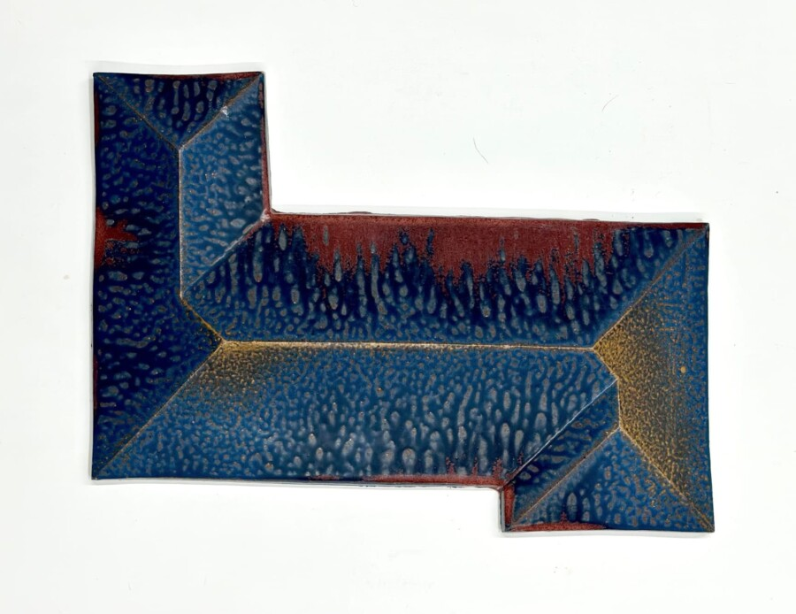

Alison Ruttan: The Paradox of Inaction
The Paradox of Inaction is a new site-specific installation by Alison Ruttan composed of over 160 cast ceramic forms. The ceramic pieces, arranged in low-laying platforms throughout the 2300 sq ft gallery, appear abstract at first glance, but when seen collectively create the illusion of a submerged suburban neighborhood. The installation recreates a catastrophic scene that has unfortunately become increasingly common in coastal communities as a result of global warming. Placing the viewer at the center of the scene, the installation invites reflection and deeper understanding of the threat of current and future natural disasters.
Throughout her career, Ruttan has endeavored to create visual representations of massive traumatic events that defy our human capacity to comprehend fully. For Ruttan, the process of representing these events by spending countless hours rendering them visible is an attempt to make them feel more real for herself as well as others. Her hope is that this work serves as a call to action for others to shift habits and prevent further inaction.
Alison Ruttan is a project-based artist whose work focuses on topical investigations. Her work has been exhibited at Minneapolis Institute of Art, The Chicago Cultural Center, Crystal Bridges Art Museum in Bentonville, AR, The Museum of Contemporary Photography in Chicago, Elmhurst Art Museum, Elmhurst, IL, Kent State University Art Museum, Kent, OH, The Frist Museum, Nashville, Sweeney Art Gallery, Riverside, CA, Hyde Park Art Center, Chicago, Document Gallery, Chicago, Galerie Wit, Wageningen, Netherlands, Rocket Gallery, London, The Drawing Center, New York City, Her work has been written about in Art In America, Flash Art, Chicago Tribune, Art Papers, Chicago Magazine, and New Art Examiner. Awards include The Illinois Arts Council, Jerome Foundation, Art & Technology Residency; Wexner Museum, Artists Residency; and Wild Animal Park.